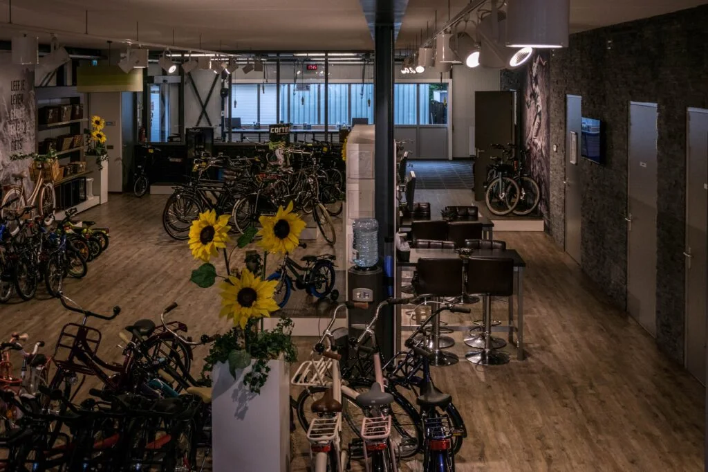

Een nieuwe fiets kopen
Bekijk het actuele aanbod e-bikes en stadsfietsen, vergelijk modellen en kom proefrijden.
Naar het assortiment →
Ontdek actuele e-bikes en stadsfietsen van Gazelle, Koga, Sparta en Batavus. Kom proefrijden, koop de fiets die bij u past en reken op onze eigen werkplaats voor onderhoud en reparatie.
Tieks is geen anonieme webshop. U kunt fietsen echt bekijken, vergelijken en proefrijden. Daarna blijft dezelfde winkel bereikbaar voor onderhoud, reparatie en technische service.
Bekijk het actuele aanbod e-bikes en stadsfietsen, vergelijk modellen en kom proefrijden.
Naar het assortiment →Van servicebeurt tot technische storing: de eigen werkplaats helpt u weer op weg.
Bekijk werkplaats →Kom langs met uw wensen. Het team helpt u gericht vergelijken op gebruik, comfort en techniek.
Kom langs →Van comfortabele e-bikes tot betrouwbare stadsfietsen. Bekijk modellen en prijzen en kom langs om uw favorieten in het echt te vergelijken.


In de ruime, moderne werkplaats worden reparaties uitgevoerd, e-bikes technisch onderhouden en nieuwe fietsen afgemonteerd en afgesteld.
Praktische voordelen die Tieks zelf op de officiële website aanbiedt.

Nieuwe en gebruikte kinderfietsen, loopfietsen, meegroeifietsen, steps en accessoires. Voor de allerkleinsten is er een testparcours om rustig en veilig te proberen.
63 Google-beoordelingen
Sinds 1995 draait Tieks om fietsen, techniek en service die ook ná de aankoop blijft.

Of breng uw huidige fiets langs voor onderhoud en reparatie. U vindt Tieks aan het Weerdingerkanaal in Nieuw-Weerdinge.